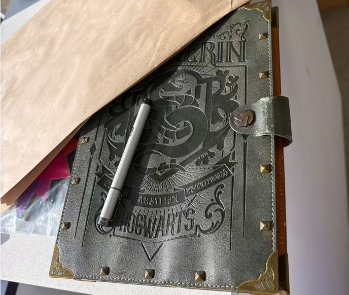
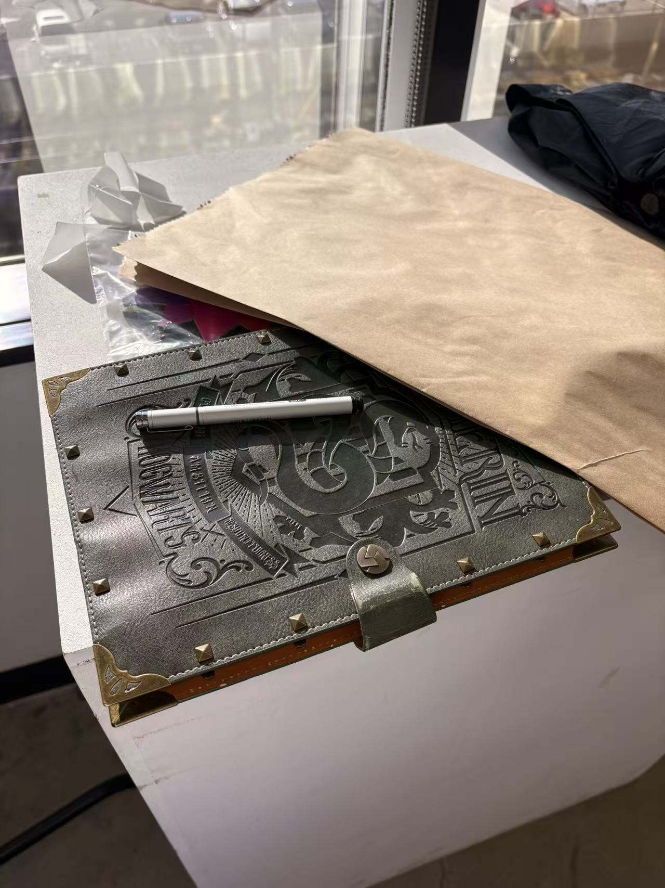
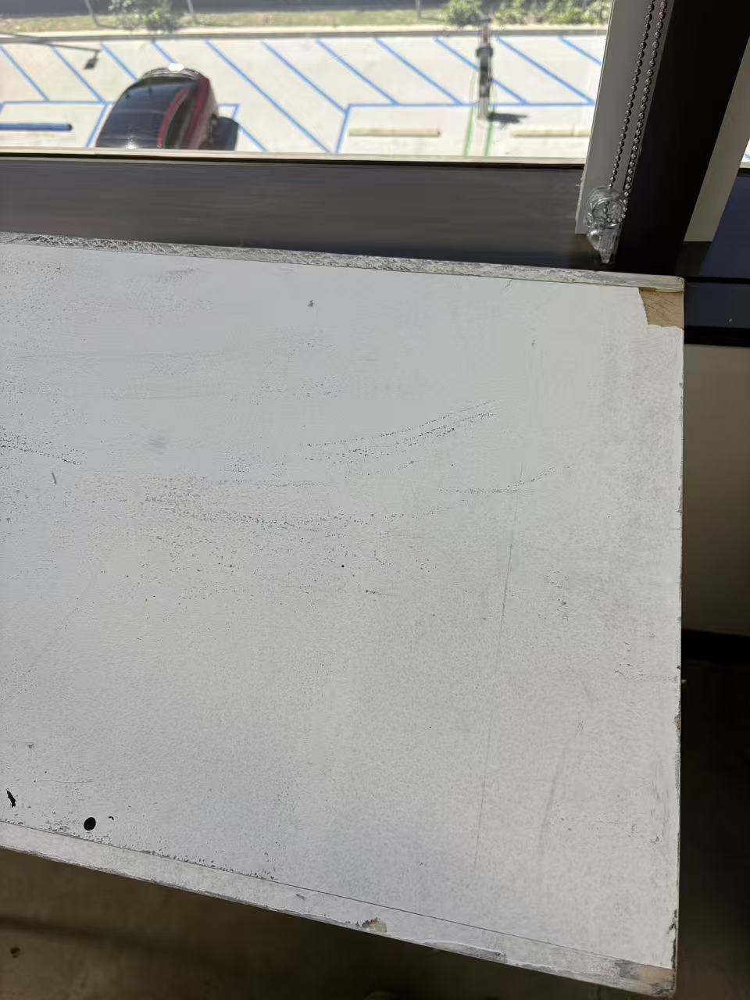

Overview
Day 1
Day 2
Observation period: 2 days
Start Date: 2026.04.14
End Date: 2026.04.15
Record: 1 time

| Zone | Element | Observation |
|---|---|---|
| A (Exterior) | Dimensions | Approximately 45cm × 15cm × 8cm |
| B (Surface) | Material | Leather cover; tactile texture consistent with genuine or imitation leather binding |
| C (Cover Text) | Inscription | Embossed lettering: "Hogwarts"; consistent with Harry Potter franchise merchandise |
| D (Condition) | Placement | Found on white desk surface, Room 304, Building 1111; no owner present |
| E (Interior) | Contents | Not examined on Day 1; interior inspection deferred pending continued presence of specimen |
This specimen had a notably brief presence in the field. The notebook appears to have been left behind by a student with an affinity for Slytherin — one of the four houses in the Harry Potter fictional universe. Unlike other observed objects, it was reclaimed before any further examination could take place, leaving its interior contents entirely undocumented.
The notebook was discovered on a white desk in Room 304, Building 1111. It is bound in leather and embossed with the word Hogwarts — a clear mark of a Harry Potter enthusiast. The object was unattended, with no indication of when it had been left or by whom.

The interior was not opened on this occasion. The observer chose to defer any internal examination — if the notebook remains unclaimed by the following day, a closer inspection will be conducted.
Upon returning to the site on Day 2, the notebook was gone. The white desk where it had rested was empty. No trace of the object remained.
It appears the owner returned and retrieved it. The observation period is hereby concluded. Interior contents remain unknown.
